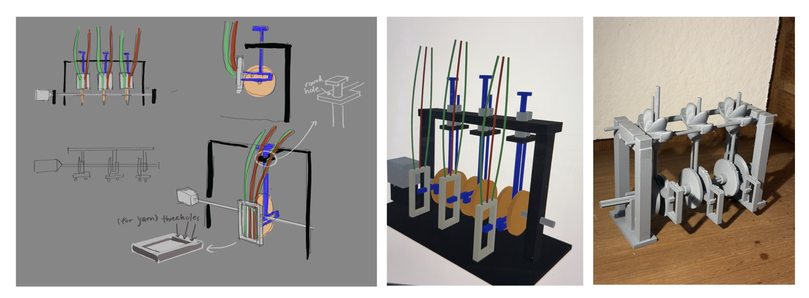
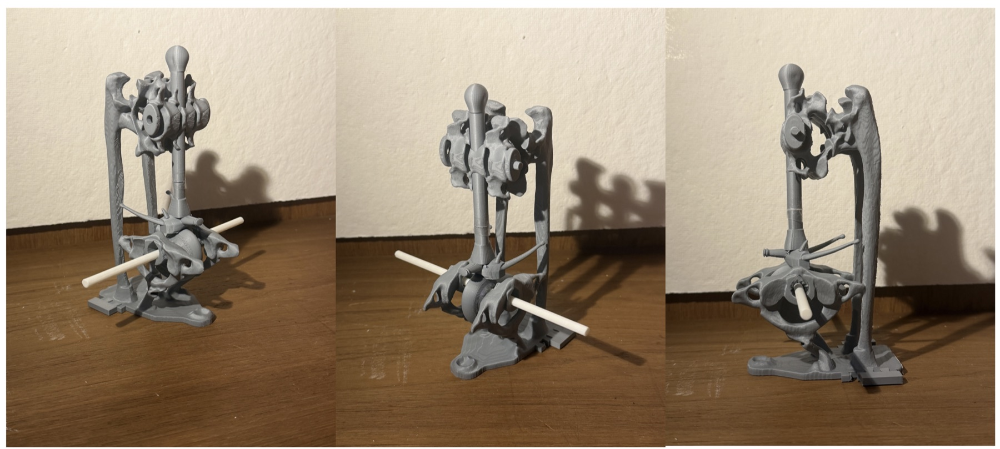
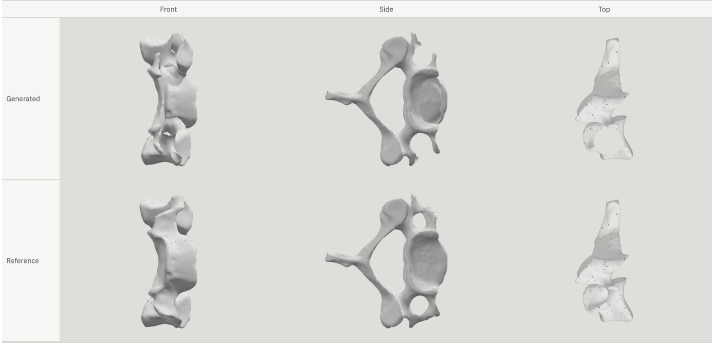
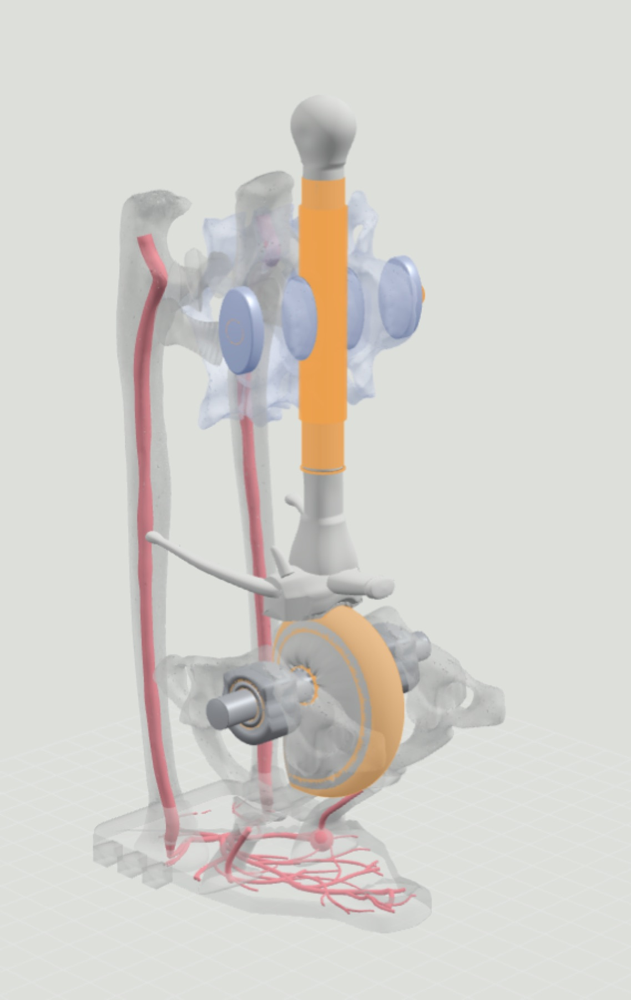
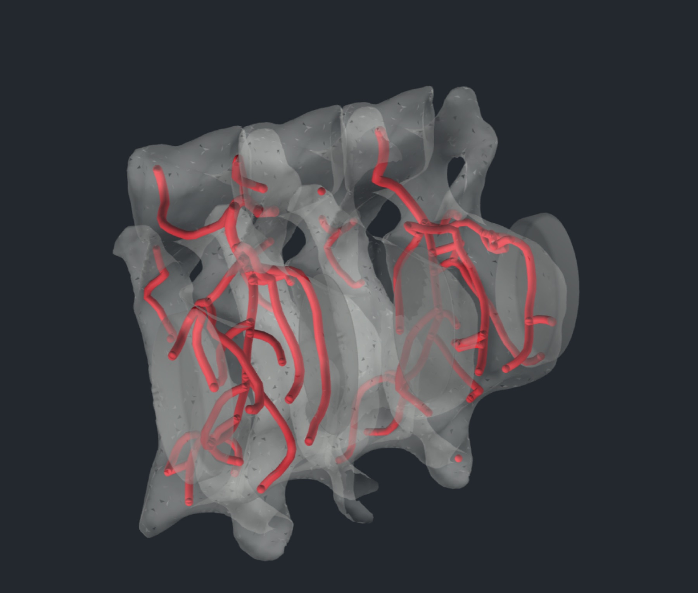
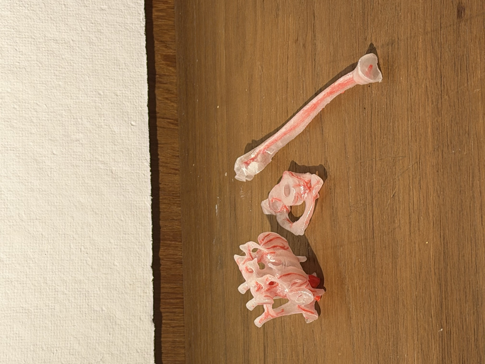

Works in progress
Body, machine, and kinetic art. I coded a bone generator that applies the logic of bone growth to mechanical structures. Some of these are prototypes; others are iterative prints.





